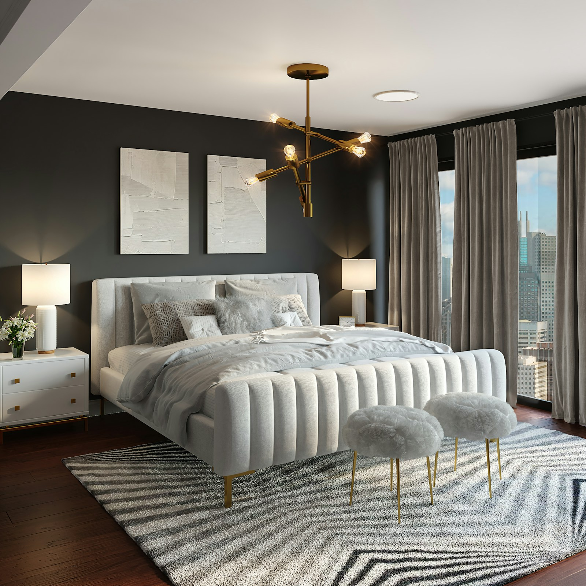

Custom Upholstered Headboards in Montreal
Bespoke upholstered headboards and wall panels, handcrafted in our Montreal studio. Any size, any fabric, any style — delivered and installed.
Transform your bedroom with a custom headboard
A custom upholstered headboard is the single most impactful change you can make to a bedroom. It defines the room, anchors the bed, and communicates a level of intention that no off-the-shelf piece can match. At Atlas Upholstering, we design and build headboards entirely to your specifications — from the dimensions and profile to the fabric, padding depth, and surface treatment.
Whether you want a clean, minimal panel in a neutral linen, a dramatic floor-to-ceiling tufted statement piece, or an integrated wall panel system that turns an entire wall into a soft architectural feature — we build it. Every headboard leaves our workshop with the same meticulous attention to detail that has defined our work for over 50 years.

From headboard to full wall feature
For clients who want more than a headboard, we design and install full upholstered wall panel systems. These integrated installations create a seamless, hotel-quality backdrop for your bed — soft, acoustically warm, and completely tailored to your room's dimensions.
Wall panels work beautifully in both modern and traditional bedrooms. The upholstered surface softens sound, adds a layer of thermal insulation, and creates a depth and richness that paint alone simply cannot achieve. We've completed panel installations throughout Montreal — from Westmount estates to Plateau condos.
Enquire About Wall PanelsYour headboard, step by step
1. Consultation
Tell us about your bedroom, your bed size, and the aesthetic you're going for. We'll discuss profile options — tufted, channelled, or flat — and help narrow down sizing and fabric direction. A quick photo of your room helps us advise you well.
2. Fabric & Style Selection
Browse our in-studio fabric library or bring your own sample. We'll help you select a fabric that looks stunning and holds up over time — considering texture, colour, durability, and how the material interacts with your chosen profile and lighting.
3. Expert Craftsmanship & Installation
Your headboard is built in our Montreal workshop with precision and care. We deliver and install — securing wall-mounted panels and headboards properly and ensuring everything is level, plumb, and exactly as specified before we leave.
Headboard FAQ
-
Yes — every headboard we make is custom sized to your exact specifications. We build for twin, double, queen, king, and California king frames, as well as non-standard and European sizes. Simply provide your bed width and desired headboard height, and we'll build precisely to those dimensions.
-
We offer hundreds of fabric options including velvet, linen blends, boucle, faux suede, faux leather, and performance textiles. You can choose from our in-studio library or bring your own fabric (COM). We'll advise you on what works best for the aesthetic and durability you're looking for.
-
Yes — we offer freestanding headboards that attach to your existing bed frame, as well as wall-mounted headboards and full panel systems secured directly to your bedroom wall. On-site installation is available throughout Montreal and surrounding areas, including Westmount, NDG, Côte-des-Neiges, and the South Shore.
-
Pricing depends on the bed size, fabric selection, and style details such as tufting, channelling, or an integrated wall panel system. We provide free estimates with no commitment — share your bed size, preferred fabric direction, and the look you're going for, and we'll send you a detailed quote within 24 hours.